<title>Madame Caci Instagram</title>
<meta name="claude:viewport-fit-sides" content="cover">
<link rel="stylesheet" href="https://fonts.googleapis.com/css2?family=Cormorant+Garamond:ital,wght@0,500;1,500&family=Jost:wght@400;500&display=swap">
<style>
/* Layout: presentation of a personal Instagram account — editorial header, sticky section tabs, one view per account space. Single warm light look taken from the photos. */
:root{--bg:#FAF7F2;--paper:#FFFFFF;--ink:#211B17;--muted:#6F655D;--accent:#8E5B3B;--line:rgba(33,27,23,.12);--d:"Cormorant Garamond",Georgia,serif;--s:"Jost",system-ui,sans-serif;color-scheme:light}
*{box-sizing:border-box}body{margin:0;background:var(--bg);color:var(--ink);font:400 16px/1.55 var(--s)}
.wrap{max-width:1320px;margin:0 auto;padding-left:max(16px,env(safe-area-inset-left,0px));padding-right:max(16px,env(safe-area-inset-right,0px))}
header.top{padding-block:52px 22px}.eyebrow{font:500 12px var(--s);letter-spacing:.24em;text-transform:uppercase;color:var(--accent)}
h1{font:500 clamp(40px,6vw,72px)/1 var(--d);margin:12px 0 14px;text-wrap:balance}h2{font:500 44px/1.05 var(--d);margin:10px 0 8px}h3{font:500 12px var(--s);letter-spacing:.2em;text-transform:uppercase;color:var(--muted);margin:40px 0 14px}h3 span{margin-left:12px;letter-spacing:0;text-transform:none;font-size:14px}
.lead{max-width:72ch;color:var(--muted);margin:0}.small{font-size:13px;color:var(--muted)}
nav.tabs{position:sticky;top:env(safe-area-inset-top,0px);z-index:5;background:var(--bg);border-bottom:1px solid var(--line)}body::before{content:"";position:fixed;inset:0 0 auto;height:env(safe-area-inset-top,0px);z-index:10;background:var(--bg)}
nav.tabs .wrap{display:flex;gap:2px;overflow-x:auto}nav.tabs a{padding:14px 12px;font:500 15px var(--s);color:var(--muted);text-decoration:none;white-space:nowrap;border-bottom:2px solid transparent}nav.tabs a[aria-current="page"]{color:var(--ink);border-bottom-color:var(--accent)}nav.tabs a:focus-visible{outline:2px solid var(--accent);outline-offset:2px}
main{padding-block:28px 72px}figure{margin:0;min-width:0}figcaption{font-size:13px;color:var(--muted);margin-top:6px;line-height:1.4}figcaption i{font-family:var(--d);font-size:16px;color:var(--ink)}img{max-width:100%;display:block}
.duo{display:grid;grid-template-columns:340px minmax(0,1fr);gap:48px;align-items:start;margin-top:28px}
.phone .scr{height:700px;overflow-y:auto;border-radius:36px;border:10px solid #161412;background:#fff}.phone img{width:100%}
.bios{display:grid;grid-template-columns:repeat(3,minmax(0,1fr));gap:14px}.bios img,.crop{box-shadow:0 0 0 1px var(--line);border-radius:12px}.crop{max-width:360px}
.grid4{display:grid;grid-template-columns:repeat(4,minmax(0,1fr));gap:16px}.grid3{display:grid;grid-template-columns:repeat(3,minmax(0,1fr));gap:16px}.strip4{display:grid;grid-template-columns:repeat(4,minmax(0,1fr));gap:12px}.bio{background:var(--paper);padding:18px 20px;font-size:15px;box-shadow:0 0 0 1px var(--line);border-radius:12px;max-width:420px}.mention{color:#00376B;font-weight:500}.hlrow{display:flex;gap:18px;flex-wrap:wrap}.hlrow div{text-align:center;font-size:13px}.hlrow img{width:74px;height:74px;border-radius:50%;margin-bottom:6px}.circle{width:110px;height:110px;border-radius:50%;margin:0 auto}.miss li{margin:10px 0;max-width:70ch}
.strip5{display:grid;grid-template-columns:repeat(5,minmax(0,1fr));gap:12px}
.row{display:grid;grid-template-columns:repeat(5,minmax(0,1fr));gap:16px}.row img{border-radius:18px}
.hls{display:grid;grid-template-columns:repeat(5,minmax(0,1fr));gap:20px;margin-top:28px}.hl{text-align:center}.circles{display:flex;gap:10px;justify-content:center}.circles img{width:84px;height:84px;border-radius:50%;box-shadow:0 0 0 1px var(--line)}.hl b{display:block;margin:10px 0;font-weight:500}.hs{border-radius:12px;margin:0 auto}
.full{width:100%;margin-top:22px;box-shadow:0 0 0 1px var(--line)}
footer{font-size:13px;color:var(--muted);padding-block:24px 56px;border-top:1px solid var(--line)}
@media (max-width:900px){.duo{grid-template-columns:minmax(0,1fr)}.phone{max-width:340px}.grid4,.grid3,.strip4{grid-template-columns:repeat(2,minmax(0,1fr))}.row,.strip5{grid-template-columns:repeat(2,minmax(0,1fr))}.hls{grid-template-columns:repeat(2,minmax(0,1fr))}.bios{grid-template-columns:minmax(0,1fr)}}
</style>
<header class="top wrap"><div class="eyebrow">Proposition · Instagram personnel de Tiziana Caci</div><h1>Madame Caci</h1>
<p class="lead">Le compte personnel de Tiziana tel qu’il pourrait apparaître : un feed exclusivement photographique, des Reels où elle prend la parole, des Stories aux codes natifs d’Instagram et cinq Stories à la une en français. Aucun élément de l’identité Fynovates.</p></header>
<nav class="tabs" aria-label="Sections"><div class="wrap"><a href="#profil">Profil</a><a href="#feed">Feed</a><a href="#reels">Reels</a><a href="#stories">Stories</a><a href="#sequences">Séquences</a><a href="#highlights">À la une</a><a href="#manques">À compléter</a><a href="#planche">Planche globale</a></div></nav>
<main class="wrap">
<section id="profil" data-view="profil"><h2>Mockup 1 · Le profil</h2><p class="lead">Portrait réel en photo de profil, nom affiché « Tiziana Caci », bio d’une ligne avec la mention @fynovates en lien, cinq Stories à la une, grille de quinze photographies. Faites défiler l’écran.</p>
<div class="duo"><figure class="phone"><div class="scr">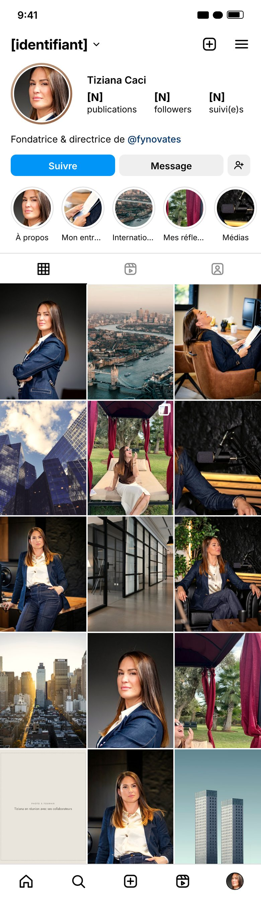</div><figcaption>Profil complet</figcaption></figure><div class="stack"><h3>La bio</h3><div class="bio"><b>Tiziana Caci</b><br>Fondatrice &amp; directrice de <span class="mention">@fynovates</span></div>
<p class="small">L’identifiant du compte n’a pas été fourni : il apparaît comme « [identifiant] » et sera remplacé par le vrai nom de compte. Les nombres d’abonnés sont des emplacements.</p>
<h3>Stories à la une</h3><div class="hlrow"><div><span>À propos</span></div><div><span>Mon entreprise</span></div><div><span>International</span></div><div>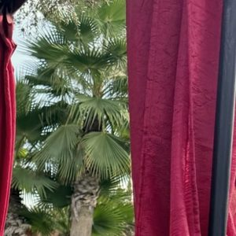<span>Mes réflexions</span></div><div><span>Médias</span></div></div></div></div></section>
<section id="feed" data-view="feed" hidden><h2>Mockup 2 · Le feed</h2><p class="lead">Uniquement des photographies, sans texte, logo ni montage. Tiziana, ses lieux de travail, l’architecture, les villes et les détails alternent. Les réflexions sont dans les légendes.</p>
<div class="duo"><figure class="phone"><div class="scr">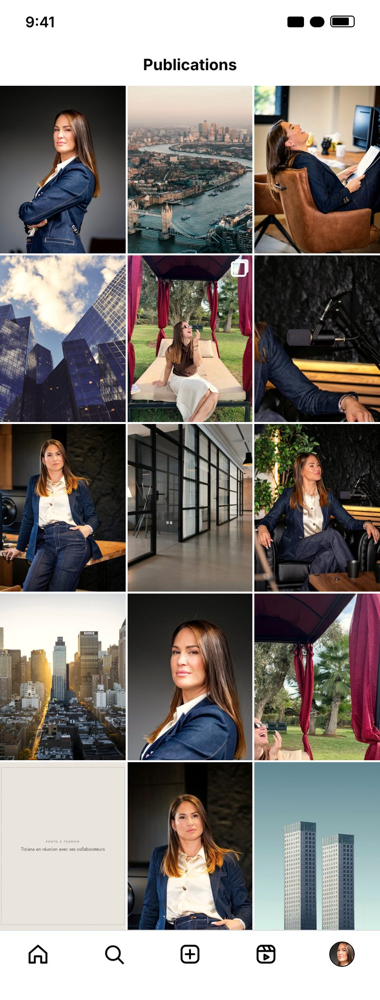</div><figcaption>Grille de 15 photographies</figcaption></figure><div class="grid3"><figure><figcaption><b>Portrait</b><br><i>« Construire une entreprise, c’est apprendre à penser au-delà de la prochaine décision. »</i></figcaption></figure><figure><figcaption><b>Lieu · ville</b> · photo de lieu issue du projet<br><i>« L’international ouvre des possibilités. Mais il demande aussi une organisation beaucoup plus structurée. »</i></figcaption></figure><figure>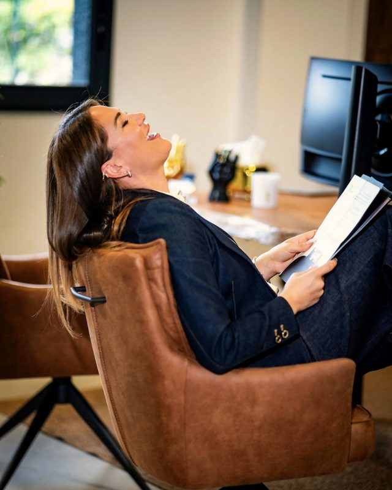<figcaption><b>Moment professionnel</b><br><i>« Aujourd’hui, beaucoup de réflexions autour de l’organisation et du développement de Fynovates. Et quelques fous rires. »</i></figcaption></figure><figure><figcaption><b>Architecture</b> · photo de lieu issue du projet<br><i>« Les belles structures ont toujours quelque chose en commun : on ne voit pas tout ce qui les fait tenir. »</i></figcaption></figure><figure>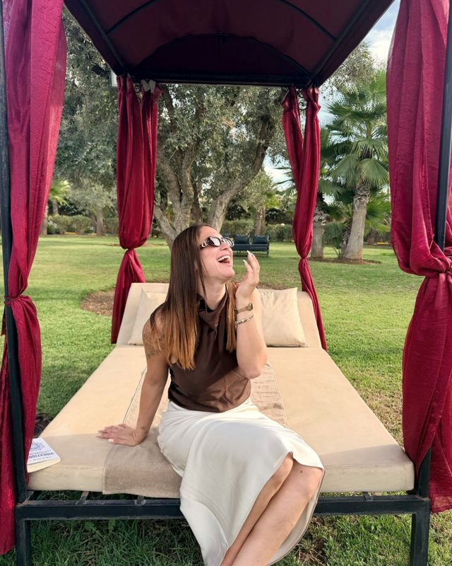<figcaption><b>Portrait en extérieur</b><br><i>« Prendre du recul fait aussi partie du travail. »</i></figcaption></figure><figure><figcaption><b>Détail</b><br><i>« Une conviction se travaille avant d’être partagée. »</i></figcaption></figure><figure><figcaption><b>Portrait · environnement professionnel</b><br><i>« La croissance est intéressante. La capacité à l’absorber correctement l’est encore plus. »</i></figcaption></figure><figure>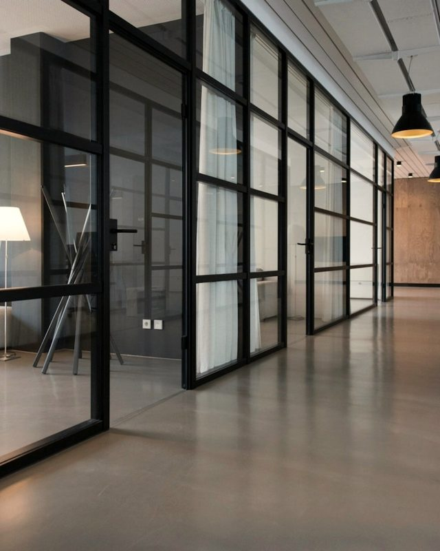<figcaption><b>Intérieur professionnel</b> · photo de lieu issue du projet<br><i>« Un bel espace de travail aide. Une organisation claire aide davantage. »</i></figcaption></figure><figure><figcaption><b>Moment professionnel · prise de parole</b><br><i>« Préparer une prise de parole, c’est d’abord clarifier ce que l’on pense vraiment. »</i></figcaption></figure><figure><figcaption><b>Lieu · ville</b> · photo de lieu issue du projet<br><i>« Découvrir de nouveaux environnements entrepreneuriaux permet de prendre du recul sur sa propre manière de construire une entreprise. »</i></figcaption></figure><figure><figcaption><b>Portrait</b><br><i>« Une grande partie du travail d’une dirigeante consiste à prendre des décisions que personne ne voit. »</i></figcaption></figure><figure>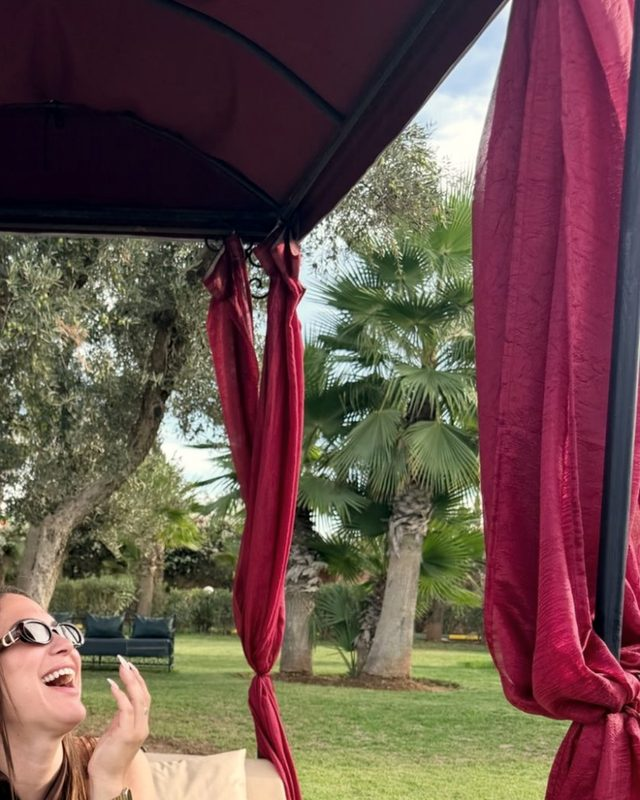<figcaption><b>Déplacement · ambiance</b><br><i>« Ailleurs, les questions restent les mêmes. Seul le regard change. »</i></figcaption></figure><figure>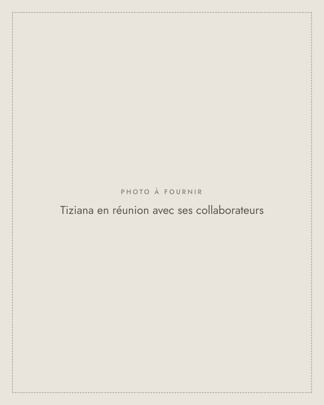<figcaption><b>Moment professionnel</b> · photo à fournir<br><i>« [Légende à rédiger à partir de la situation réelle.] »</i></figcaption></figure><figure><figcaption><b>Portrait naturel</b><br><i>« Diriger, c’est souvent choisir ce que l’on ne fera pas. »</i></figcaption></figure><figure><figcaption><b>Architecture</b> · photo de lieu issue du projet<br><i>« Ce qui dure se construit lentement. »</i></figcaption></figure></div></div>
<h3>Carrousel photographique · publication 5</h3><div class="strip4"><figure class=""><figcaption>Photo 1</figcaption></figure><figure class=""><figcaption>Photo 2</figcaption></figure><figure class="">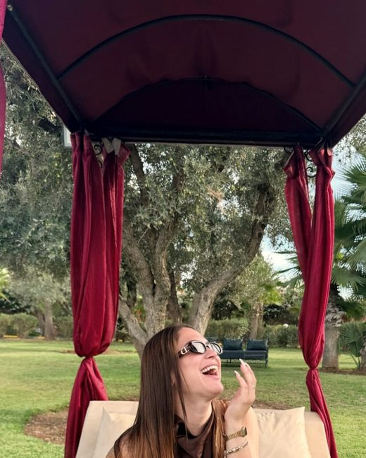<figcaption>Photo 3</figcaption></figure><figure class="">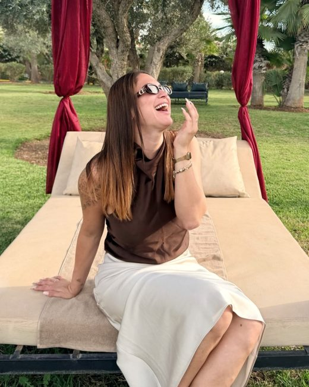<figcaption>Photo 4</figcaption></figure></div></section>
<section id="reels" data-view="reels" hidden><h2>Les Reels</h2><p class="lead">Tiziana prend la parole : face caméra, reportage et terrain, extraits YouTube, storytelling. Miniatures : une image de la vidéo et un sous-titre sobre. En attendant les vraies vidéos, les images viennent des photos fournies.</p>
<div class="duo"><figure class="phone"><div class="scr">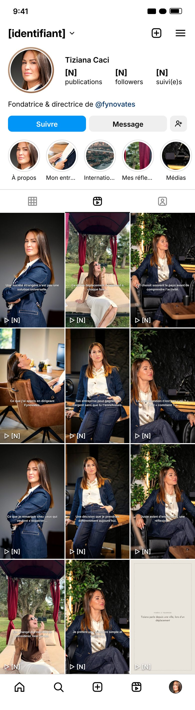</div><figcaption>Onglet Reels</figcaption></figure><div class="grid4"><figure class="">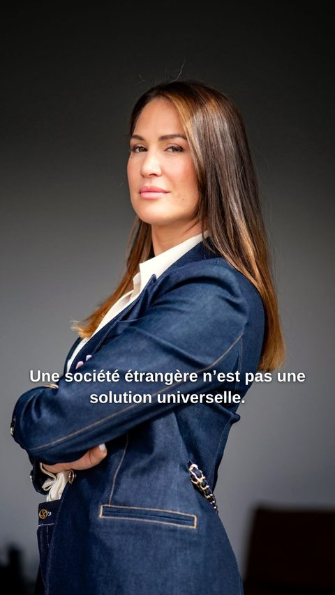<figcaption>Face caméra · Pourquoi je ne crois pas aux sociétés étrangères comme solutions universelles</figcaption></figure><figure class=""><figcaption>Reportage et terrain · Une observation pendant un déplacement</figcaption></figure><figure class="">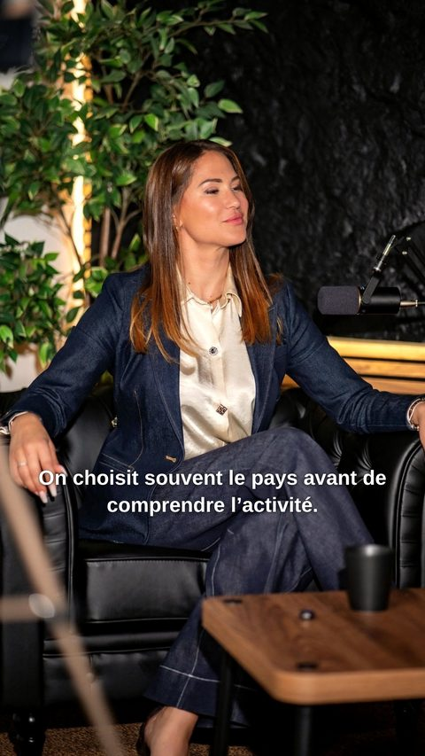<figcaption>Extrait YouTube · Pourquoi choisir son pays avant d’analyser son activité est une erreur</figcaption></figure><figure class=""><figcaption>Storytelling · Ce que j’ai appris en dirigeant Fynovates</figcaption></figure><figure class=""><figcaption>Face caméra · Une entreprise peut gagner de l’argent sans enrichir réellement son dirigeant</figcaption></figure><figure class="">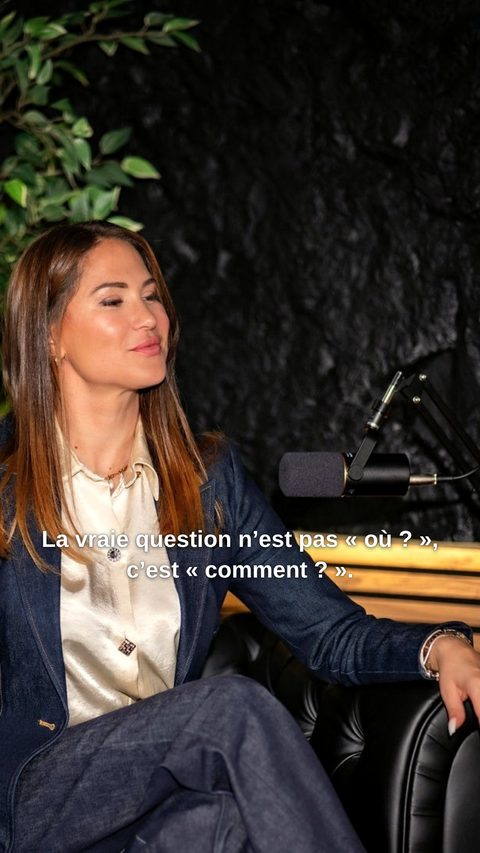<figcaption>Extrait YouTube · Un raisonnement extrait d’un décryptage</figcaption></figure><figure class=""><figcaption>Face caméra · Ce que je remarque chez les entrepreneurs qui veulent s’expatrier</figcaption></figure><figure class="">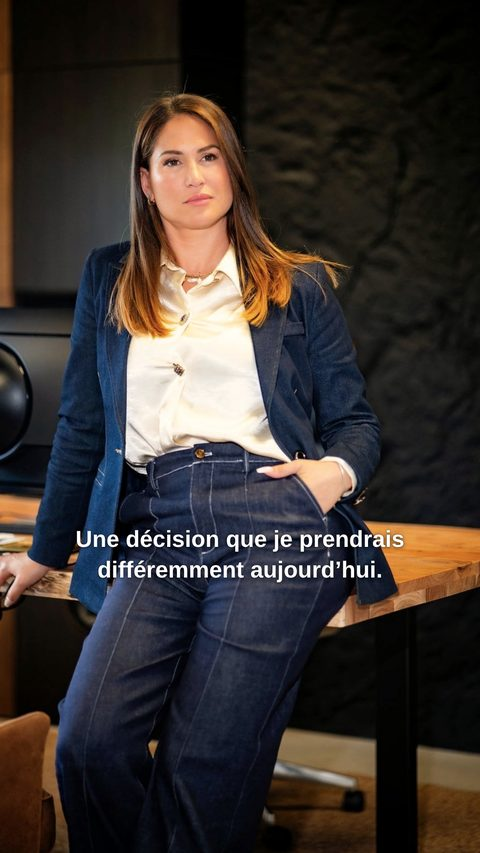<figcaption>Storytelling · Une décision de dirigeante</figcaption></figure><figure class=""><figcaption>Reportage et terrain · En marge d’une intervention</figcaption></figure><figure class="">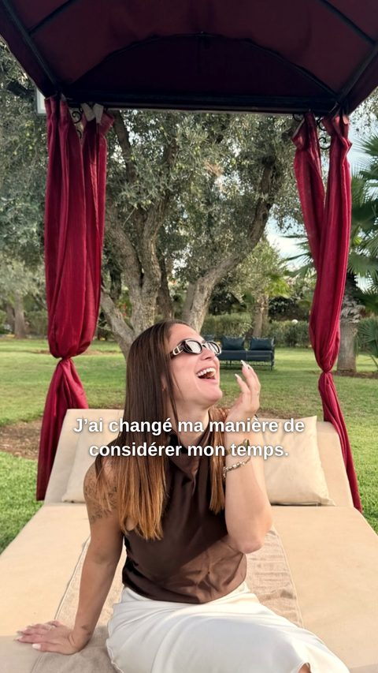<figcaption>Storytelling · Une conviction qui a évolué</figcaption></figure><figure class=""><figcaption>Extrait YouTube · Une prise de position</figcaption></figure><figure class="">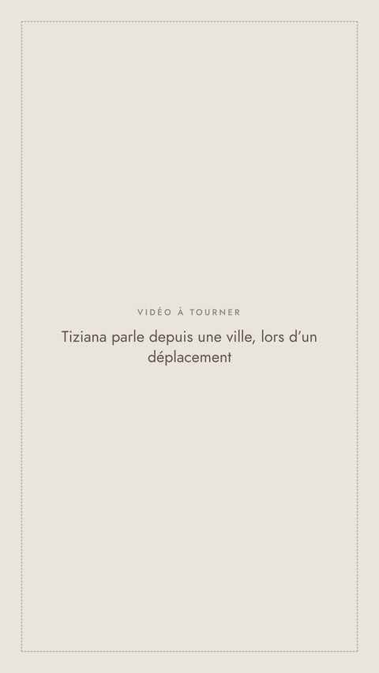<figcaption>Reportage et terrain · Une réflexion filmée en ville</figcaption></figure></div></div></section>
<section id="stories" data-view="stories" hidden><h2>Mockup 3 · Les Stories</h2><p class="lead">Les styles de l’éditeur natif d’Instagram : sérif noir sur bandeaux blancs pour les convictions, sans-sérif blanc ou sur fond sombre pour les réflexions, textes courts, face caméra, lieux et stickers natifs. Les stickers sont simulés ; les fichiers de production laissent la place libre.</p>
<h3>Style 1 · Sérif et bandeaux blancs</h3><div class="row"><figure class="">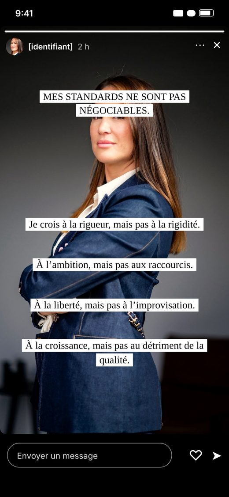<figcaption>Standards</figcaption></figure><figure class="">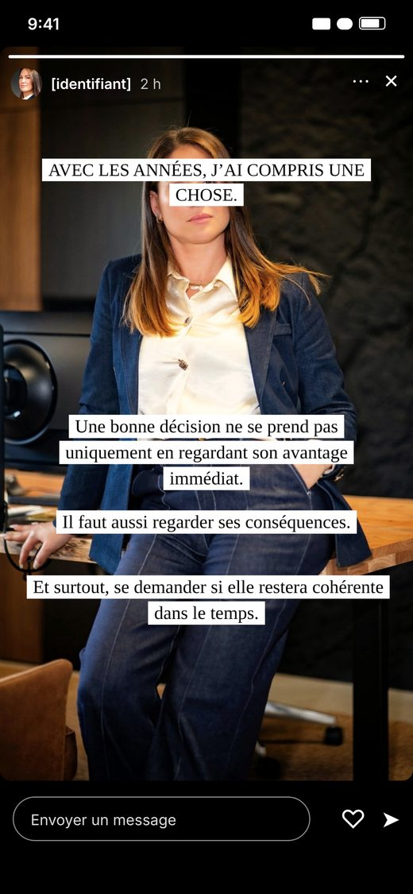<figcaption>Expérience</figcaption></figure><figure class="">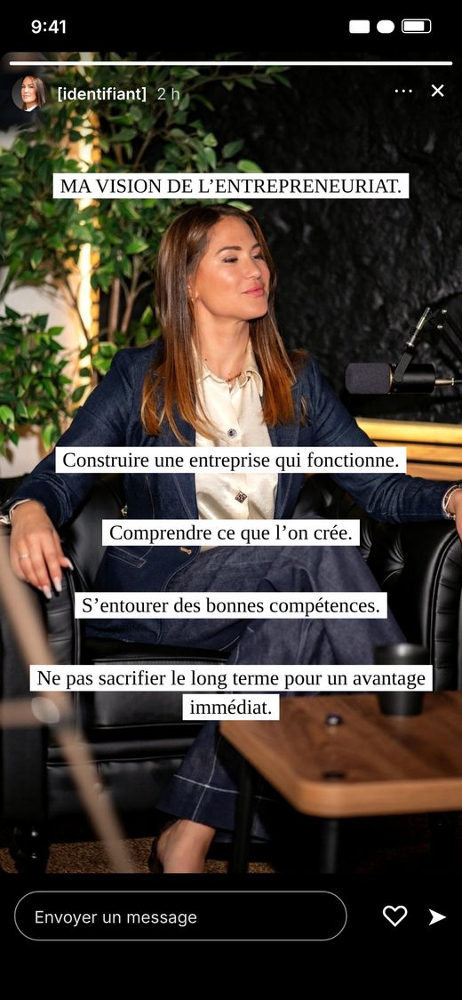<figcaption>Vision entrepreneuriale</figcaption></figure></div><h3>Style 2 · Sans-sérif natif</h3><div class="row"><figure class="">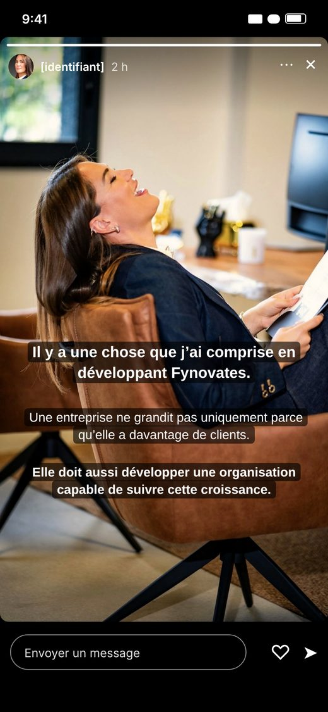<figcaption>Dirigeante · fond sombre</figcaption></figure><figure class="">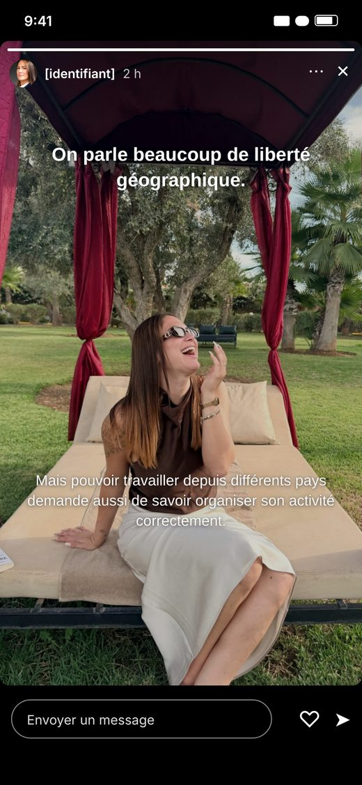<figcaption>International · texte blanc</figcaption></figure><figure class="">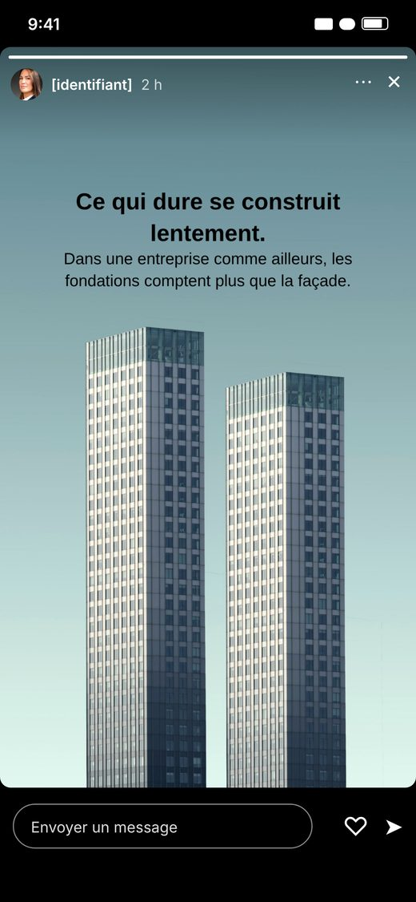<figcaption>Texte noir sur photo claire</figcaption></figure></div><h3>Style 3 · Texte court sur photo</h3><div class="row"><figure class=""><figcaption>Portrait</figcaption></figure><figure class=""><figcaption>Ville</figcaption></figure><figure class="">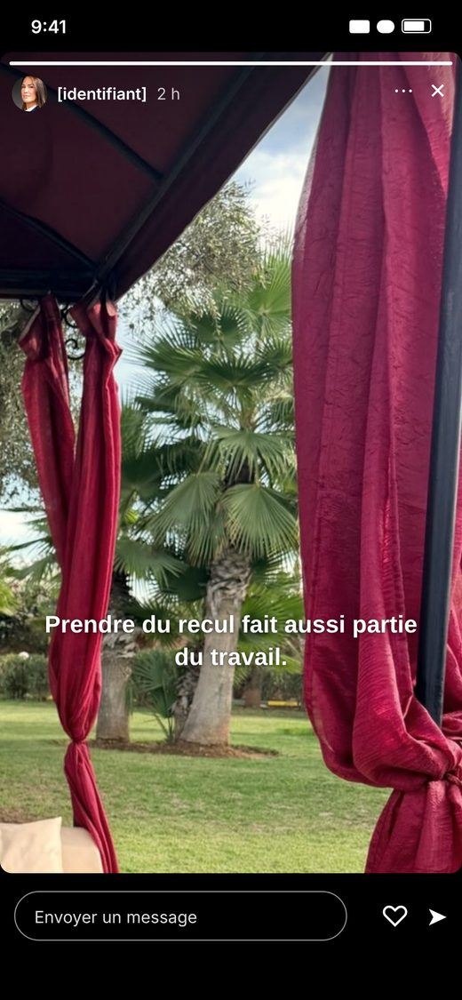<figcaption>Paysage</figcaption></figure></div><h3>Style 4 · Face caméra</h3><div class="row"><figure class=""><figcaption>Face caméra · bureau</figcaption></figure><figure class=""><figcaption>Face caméra · studio</figcaption></figure></div><h3>Style 5 · Photo de lieu et réflexion</h3><div class="row"><figure class=""><figcaption>Ville</figcaption></figure><figure class="">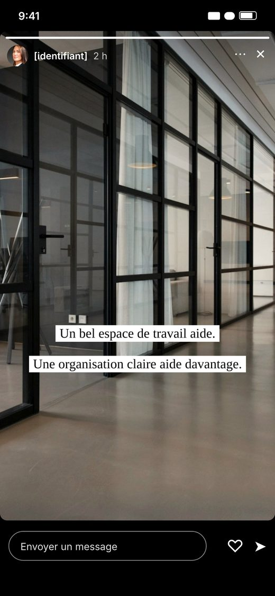<figcaption>Espace de travail</figcaption></figure></div><h3>Style 6 · Interactive</h3><div class="row"><figure class=""><figcaption>Boîte à questions</figcaption></figure><figure class="">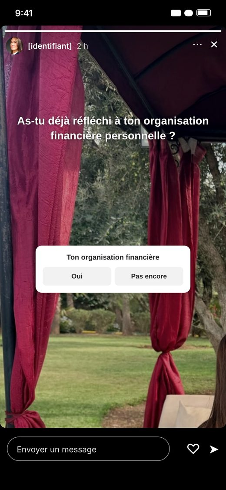<figcaption>Sondage</figcaption></figure><figure class="">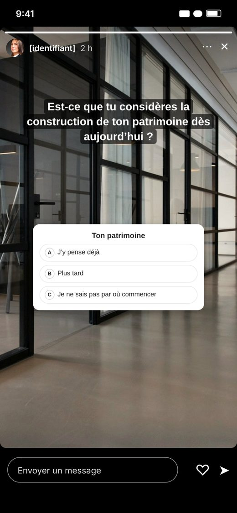<figcaption>Quiz</figcaption></figure><figure class=""><figcaption>Lien YouTube</figcaption></figure><figure class="">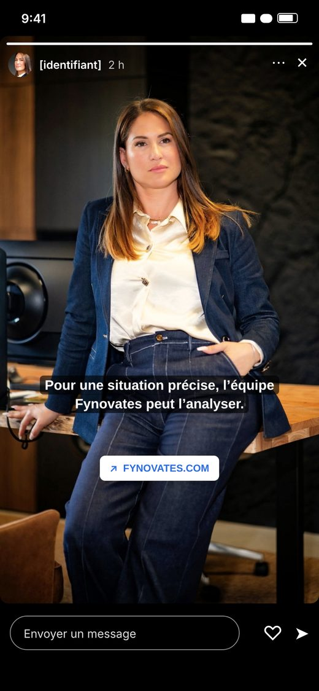<figcaption>Lien vers Fynovates</figcaption></figure></div></section>
<section id="sequences" data-view="sequences" hidden><h2>Les séquences</h2><p class="lead">Quatre séquences complètes, avec les mêmes codes natifs.</p>
<h3>Séquence A · Avec le recul…<span>Les enseignements de Tiziana</span></h3><div class="row"><figure class=""><figcaption>1. Accroche</figcaption></figure><figure class=""><figcaption>2. Observation</figcaption></figure><figure class="">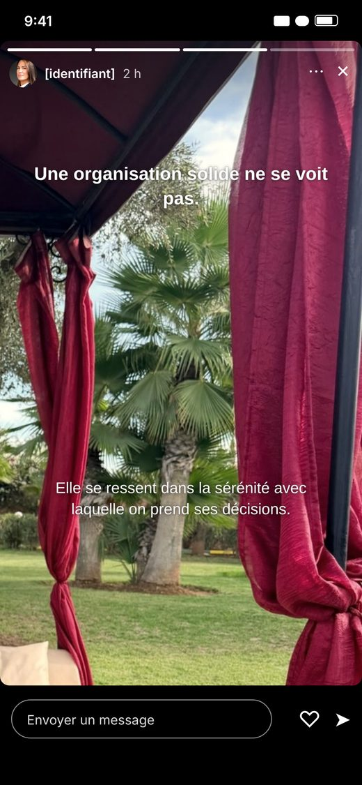<figcaption>3. Réflexion</figcaption></figure><figure class=""><figcaption>4. Conviction</figcaption></figure></div><h3>Séquence B · Journal de dirigeante<span>Le développement de Fynovates</span></h3><div class="row"><figure class="">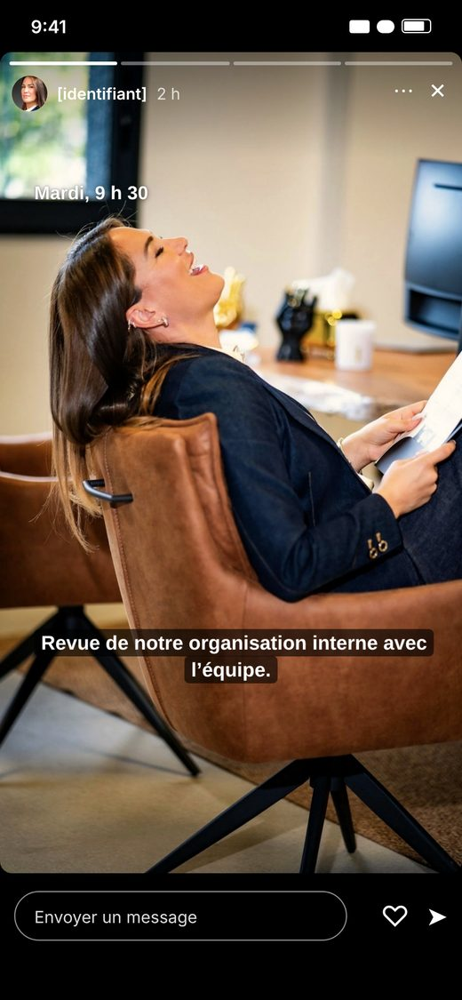<figcaption>1. Moment de travail</figcaption></figure><figure class="">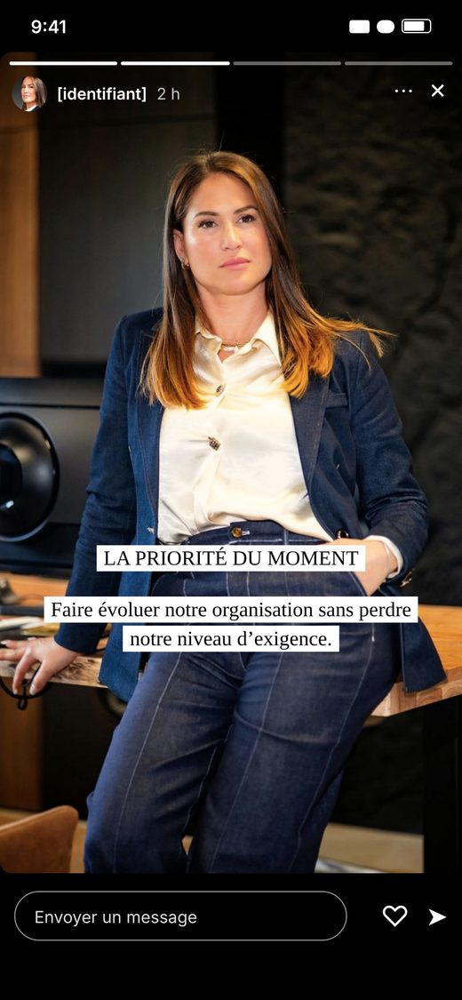<figcaption>2. Priorité</figcaption></figure><figure class=""><figcaption>3. Réflexion</figcaption></figure><figure class="">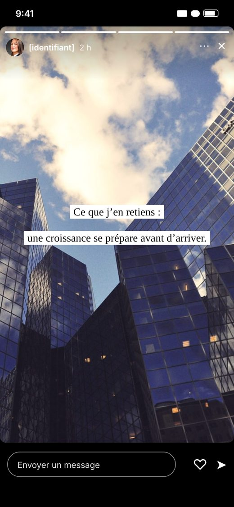<figcaption>4. Enseignement</figcaption></figure></div><h3>Séquence C · Ma vision de l’international<span>La structuration des entrepreneurs</span></h3><div class="row"><figure class=""><figcaption>1. Prise de position</figcaption></figure><figure class="">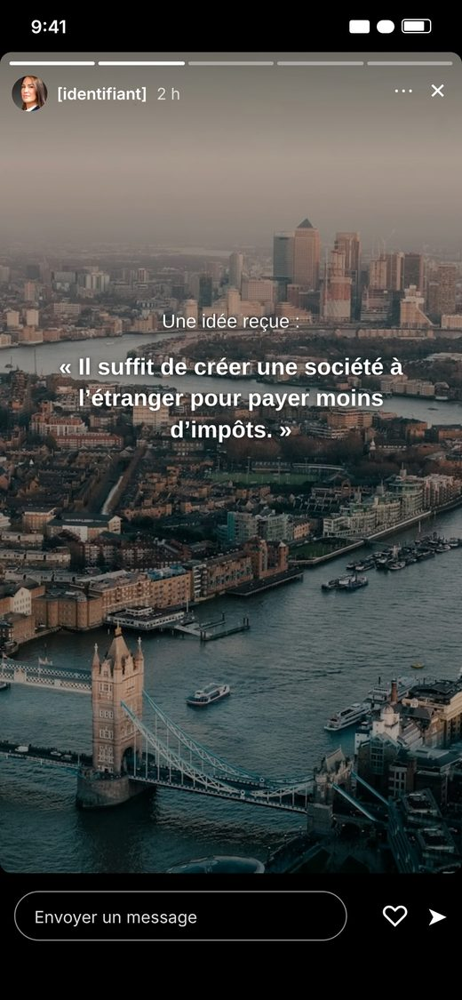<figcaption>2. Idée reçue</figcaption></figure><figure class="">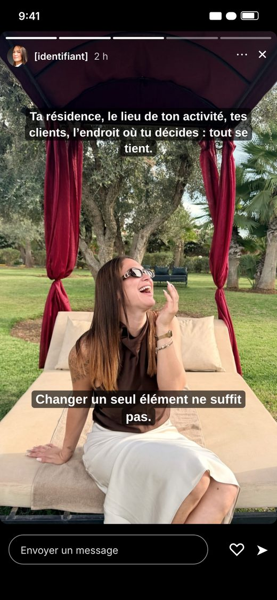<figcaption>3. Raisonnement</figcaption></figure><figure class=""><figcaption>4. Conviction</figcaption></figure><figure class=""><figcaption>5. Redirection YouTube</figcaption></figure></div><h3>Séquence D · Une question que l’on me pose souvent<span>Problématique entrepreneuriale</span></h3><div class="row"><figure class="">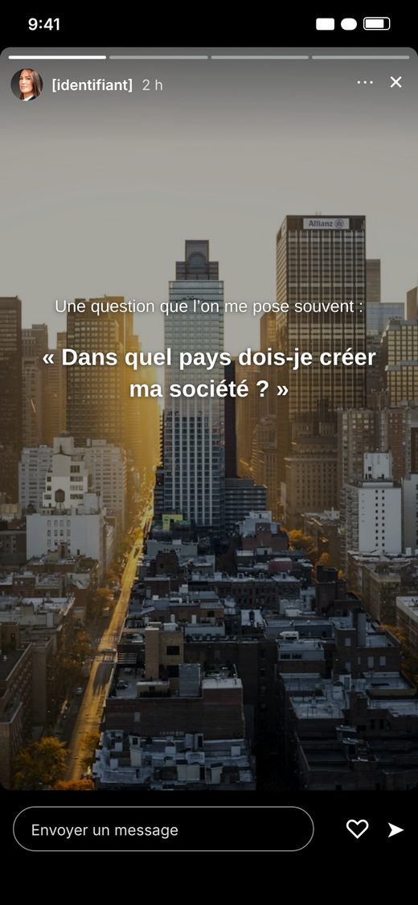<figcaption>1. Question</figcaption></figure><figure class=""><figcaption>2. Réponse</figcaption></figure><figure class=""><figcaption>3. Mise en perspective</figcaption></figure><figure class=""><figcaption>4. Redirection</figcaption></figure></div></section>
<section id="highlights" data-view="highlights" hidden><h2>Les Stories à la une</h2><p class="lead">Cinq rubriques en français. Couvertures photographiques recadrées dans les photos réelles ; l’intitulé s’affiche sous le cercle.</p>
<div class="hls"><div class="hl"><b>À propos</b>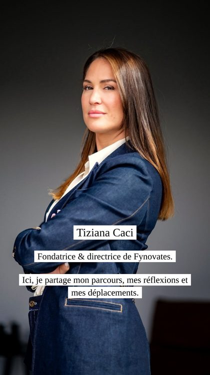<span class="small">Story d’introduction</span></div><div class="hl"><b>Mon entreprise</b>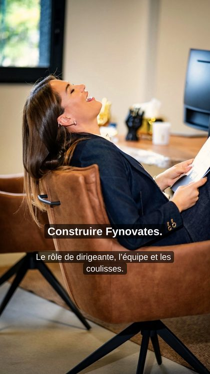<span class="small">Story d’introduction</span></div><div class="hl"><b>International</b>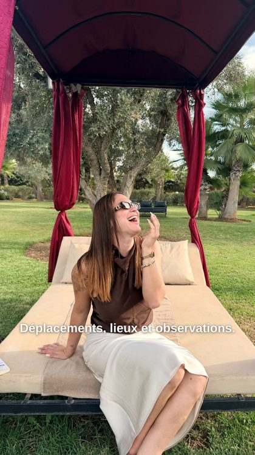<span class="small">Story d’introduction</span></div><div class="hl"><b>Mes réflexions</b>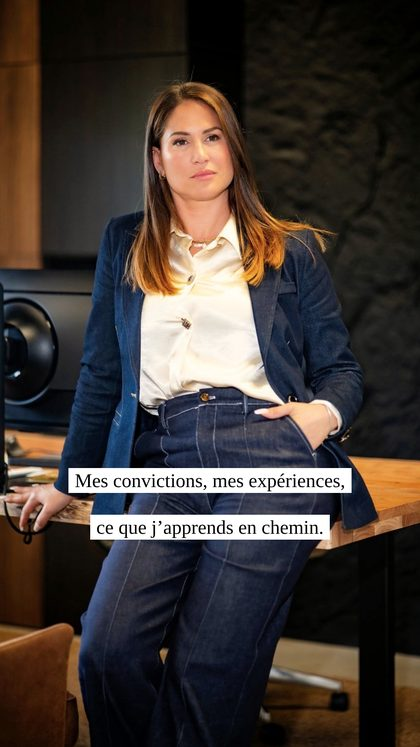<span class="small">Story d’introduction</span></div><div class="hl"><b>Médias</b>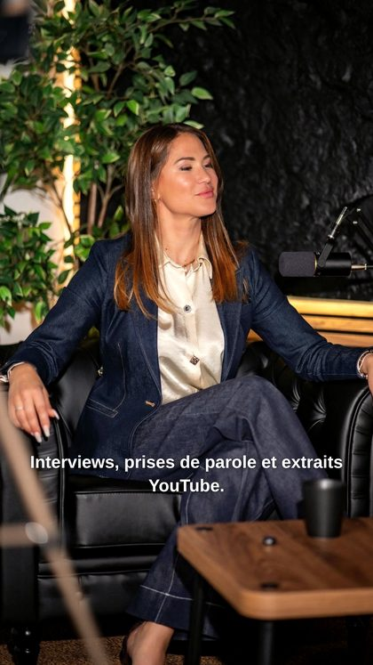<span class="small">Story d’introduction</span></div></div></section>
<section id="manques" data-view="manques" hidden><h2>À compléter</h2><p class="lead">Aucune scène n’a été inventée avec Tiziana. Il manque :</p><ol class="miss"><li>Le vrai nom de compte Instagram (identifiant).</li><li>Des photos de Tiziana en réunion et avec ses collaborateurs.</li><li>Des photos de Tiziana lors d’un événement.</li><li>Des photos de ses vrais déplacements : villes, rues, hôtels, lieux de rencontre.</li><li>Des captures des vidéos réelles pour les miniatures de Reels et les Stories face caméra.</li><li>Le nom de la chaîne YouTube pour les stickers de lien.</li><li>Les captures de référence (Louis Key, Ludovic Key) : elles n’étaient pas jointes, les styles natifs ont été reproduits d’après les conventions de l’éditeur Instagram.</li></ol></section>
<section id="planche" data-view="planche" hidden><h2>Planche globale</h2><p class="lead">Profil, Reels, feed, Stories, séquences et Stories à la une réunis.</p>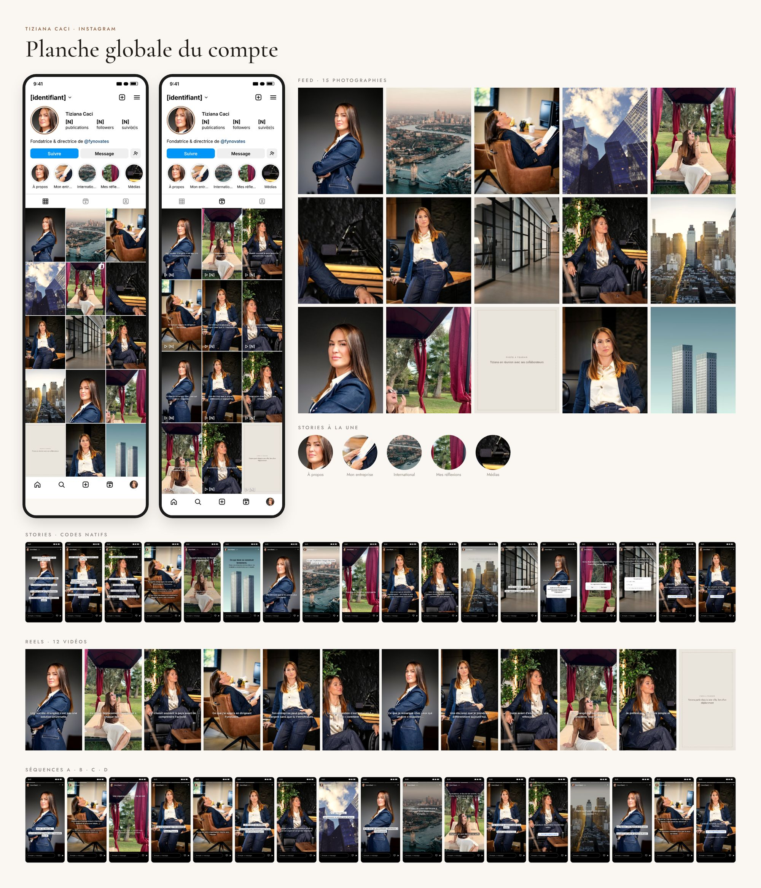</section></main>
<footer class="wrap">Photographies : les cinq photos réelles de Tiziana (même étalonnage léger, sans retouche du visage) et des photos de lieux issues des ressources du projet (Unsplash), à remplacer par ses propres photos de déplacement. Fichiers : dossier madame-caci/ du dépôt.</footer>
<script>
const views=[...document.querySelectorAll('[data-view]')],links=[...document.querySelectorAll('nav.tabs a')];
function show(){const h=(location.hash||'#profil').slice(1);const id=views.some(v=>v.dataset.view===h)?h:'profil';views.forEach(v=>v.hidden=v.dataset.view!==id);links.forEach(a=>a.getAttribute('href')==='#'+id?a.setAttribute('aria-current','page'):a.removeAttribute('aria-current'))}
addEventListener('hashchange',()=>{show();scrollTo(0,0)});show();
</script>